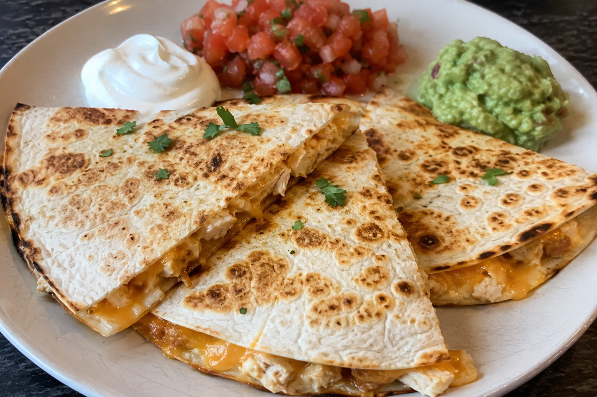

Quesadillas

About The Recipe
A quesadilla is a simple Mexican-inspired dish made by filling a tortilla with melted cheese (and sometimes chicken, beef, or vegetables), then cooking it until the tortilla is golden and crispy. The outside becomes lightly toasted while the inside stays warm and gooey with melted cheese.
Ingredients
- 2 large flour tortillas
- 1 cup shredded cheese (cheddar, Monterey Jack, or Mexican blend)
- 1 tsp butter or cooking oil
Steps
- Heat a skillet over medium heat.
- Add the butter or oil to the skillet.
- Place one tortilla in the pan.
- Sprinkle the cheese evenly over the tortilla.
- Place the second tortilla on top.
- Cook for 2 to 3 minutes until the bottom is golden brown.
- Carefully flip the quesadilla and cook for another 2 to 3 minutes until the other side is golden and the cheese is melted.
- Remove from the pan and let cool for 1 minute.
- Cut into wedges and serve.